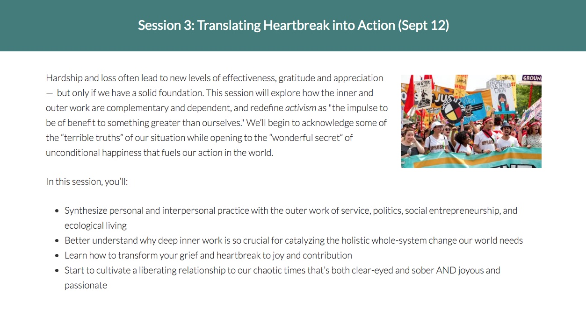
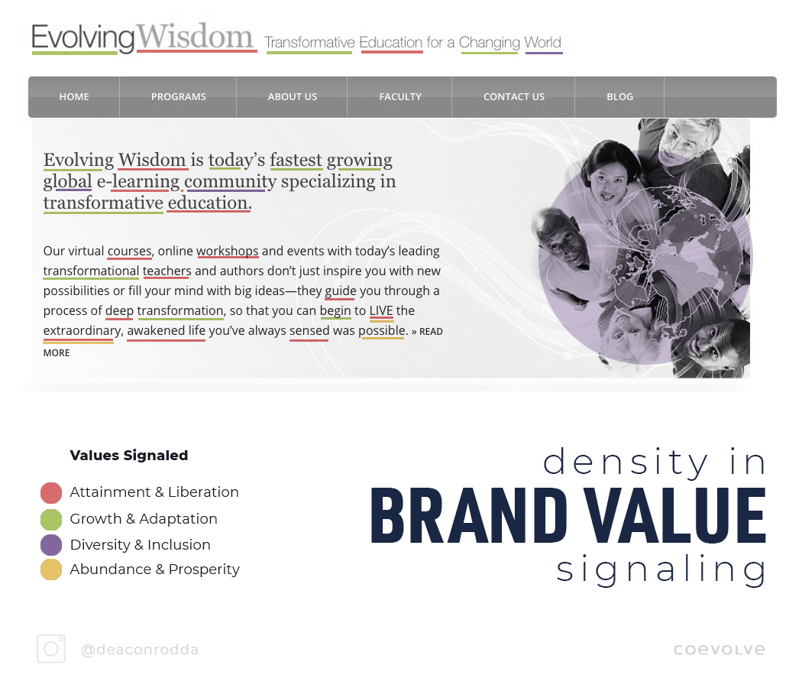
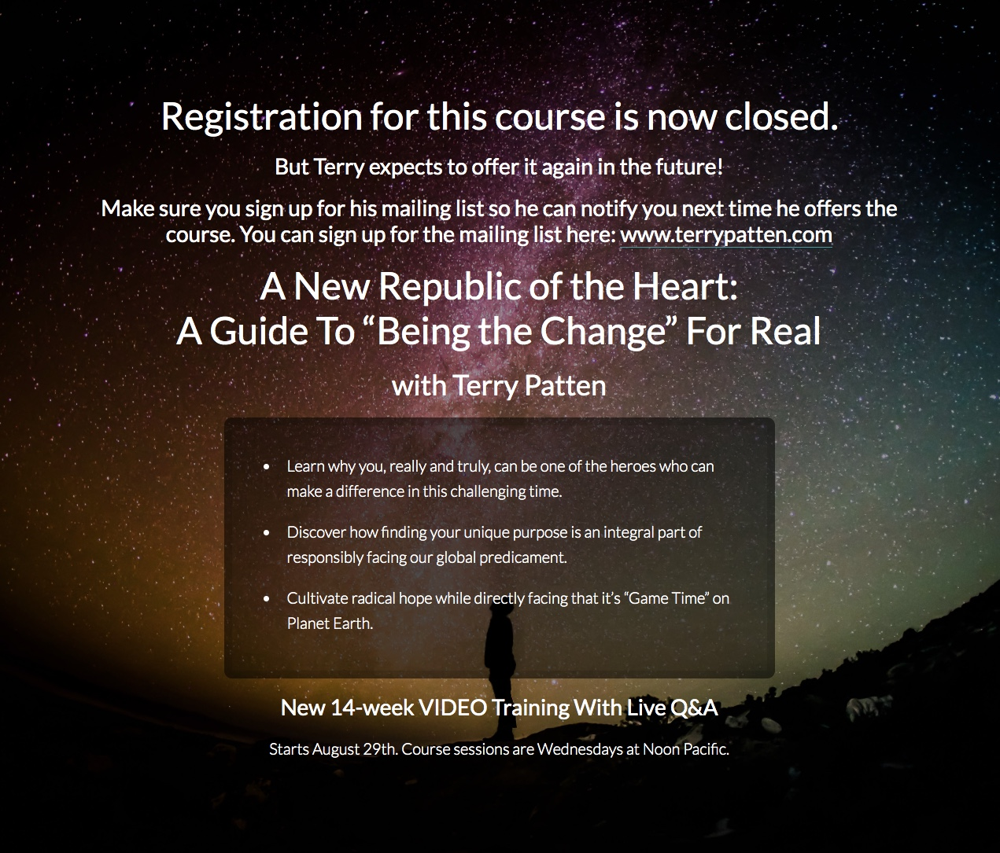
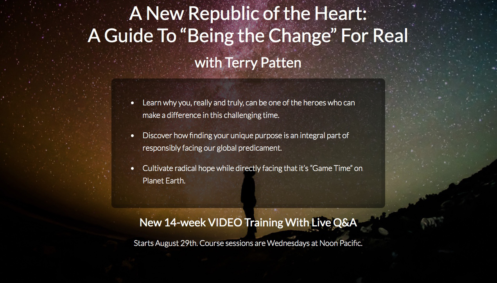
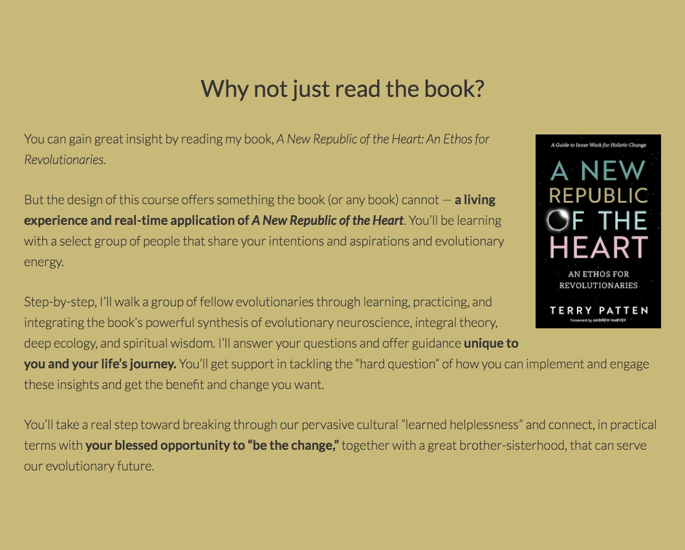
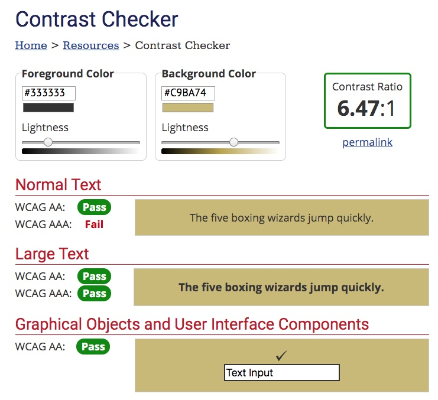

Overview
What's working:
- Most of it. More on that in a bit.
- General tone of optimistic urgency
- Juicy language
- "What You'll Learn" sections
- Course progression, the feeling of building and preparation
- Testimonials and Book Praise
- Addressing the audience directly rather than just describing the course.
- Body type: weight, size, line-height.
[ Most of it (from above) => Let's use previous content.
The good and bad of wheel reinventing
recognition ]
[ Addressing the marathon scroll.
- Ogilvy would be proud. => $3 widget
- Ogilvy also championed interaction
- Write idea, poor use of medium
- lateral navigation
- expansion and collapse
- Wikipedia and the fidget spinner
]
[ What can be gained by making badges out of recurring content. ]
Biggest Value Add I Can See
[ — an addition to the instructor to group communication dynamic, may already be happening ]
[ Relatedly, I assume we've completely nixed the Facebook group, yes? ]
[ Runner up: Include navigation other than scrolling within this page. We have options there. ]
[ Basically, whenever you're going to tell someone more than two things, if you can tell them what you are going to tell them first they'll be able to stick with it better. ]
Typographic Torts
[ Some words and phrases are more "special" than others. Okay, so how does that sentence feel? The quotation marks have to go. I'll let a few limey comedians explain this one.]
[ Did you watch the video? Seriously, watch the video. Now, if you think that it doesn't apply, try to read the second paragraph in section four, Getting Real. Read it aloud and account for the implied differences in inflection signaled by the bold, italic, and quoted spans of text. Did you have three different inflections? Here's why it doesn't work … ]
[ What we can gain by making symbols out of recurring content. ]
[ Description of improvements shown below — as soon as they happen ]
[ Headings, even smaller ones, should use non-breaking spaces between last few words. ]
[ Place a max-width attribute rule on all paragraph and list elements ]
[ Equal space between non-peers ]
Content Concerns
[ Overall there is a lot of language addressing how the participant will be affected and some which points to an integration of inner and outer work. The outer work feels less specifically addressed. ]
[ With flowery language, one idea per sentence. Always follow with something concrete. Doing otherwise should be reserved for occasions of intentional exclusion. ]
[ Unpacking the sentence, "Each week, we’ll read and discuss a new chapter, engaging it at the level of our embodied, awakened consciousness and intending to live the questions in community with fellow global citizens and planetary activists." - affinity signaling, needed - jargon, maybe/maybe not - solution for that conflict, short sentence pairs ]
[ See that recurring green/red pair? That's solid gold. ]
[ Values I'm seeing signaled in the present language … ]
[ Risks I'm seeing … ]
Color Correction
[ Color scheme feels a little off. ]

[ first two colors are very similar ]
[ seems like the scheme is torn between being vibrant and being relaxing ]
§1 Hero/Splash Section
Graphic design, and typography especially, is concerned with conveying information in the smoothest form possible. If I hand you a bunch of kale and say, "eat this." It is a difficult ask. If I throw that same head of kale in a Vita-Mix with a fistful of dates for a minute and pour it in a glass for you… Well, that's graphic design.
In the following image there's an optical weirdness in the visual hierarchy.
The line which comes first, "Registration for this course … " and the later line of seemingly greater size, "A New Republic of … " are set in exactly the same size and weight. The latter seems larger because it contains more capital letters. So, they are incredibly similar in their demand for attention.
Why does this matter? Well, when a person is directed to look at an advertisement of any kind they need to know where to start. Unlike a page in the middle of a novel somewhere where one just starts at the top left and it's convenient that all of the words are the same size, graphical displays often — for many good reasons — do not flow from top to bottom and from left to right. Therefor the first responsibility of a designer is to give someone a clear place to start.
[ Two different subjects which typographically look the same ]
[ Only using the font-size attribute to distinguish blocks of text makes for poor conveyance of semantic distinction between messages. Neglected and attributes and elements include: - font-weight - spacing - composition - background (partially) ]
[ Insufficient distinction isn't liberating it is stressful ]
With the expiration notice completely removed (below), we see that there is actually a decent flow to the piece. It would still feel better if there were more typographic contrast, but overall it works much better. There's a bit of a contrast issue in the details area, but we'll address accessibility considerations a little later on. For now let's move on to some of the content issues which arise here and persist throughout the landing page.
[ sloppy wording, "… directly facing that …" ]
[ I know I'm really ripping this section, but it is super critical to get this right.
- bounce and commitment.
- pattern establishment.
- opportunity for quick decision makers
]
Speaking of which, add the opportunity to register right here.
§2 Introduction
[ strike "extraordinary" ]
§3 Why not just read the book?
[ seriously, though? ]
[ Grey on gold body text fails legibility test. ]
[ Just barely, but still. ]
§4 Getting Real
[ Feels like an extension of section two, and I like that. ]
[ What was left out:
- below there's an FAQ, it has two kinds of stuff
- Distinguishing the kind that should be moved here …
- So, what all should be here:
• tech requirements
• how long are the sessions
• how much time commitment between sessions
• and after the course with groups
• recordings and access
• how many total participants
• communication expectations
• description of exercises, syllabus outline before details
]
§5 A Community of Change Makers
[ semantic conflict => "polarized", "one-sided" ]
[ failure to typographically delineate between upper section (About Community) and later (Course Description) ]
[ excellent placement of both registration button and book recommendation ]
§6 Sessions
[ We already did the symbol creation bit. These blocks are the most affected by that lack ]
[ Sessions one and two should not be grouped. ]
[ Eliminate the clause "In this session" from the document. It occurs twenty times and it weakens every sentence it appears in. ]
[ In session nine, sentence one, the introductory clause is not reflected in the remaining or subsequent sentences. ]
[ The sessions are the place to speak more to outcomes and specific applications. Help prospective students to place themselves into a vision of using these skills. ]
§7 Registration / Registration Closed
[ Odd prices make course feel like a commodity rather than an investment ]
[ Group rate information from FAQ should appear here ]
[ Needs better CTA once registration has closed ]
§8 Student Testimonies
[ Conflict between clouds and lightweight type. Could be fixed by applying a blur and screen to background image either before or with CSS ]
[ Typographically delineate between student and location ]
§9 What's Included
[ … ]
[ … ]
§10 More Praise
[ Heterogeny ]
[ All well spoken. good news / bad news about that. ]
[ … ]
§11 About Terry
[ nailed it ]
[ unquote "we-space" ]
[ Italicize instead of quote marking Beyond Awakening ]
§12 Final Praise and Final CTA
[ … ]
[ … ]
[ … ]
§13 Footer
[ KIT / Get news… issue ]
[ use same tab for all social links ]
[ open contact page in that tab as well ]
Aaaaaand, fin.